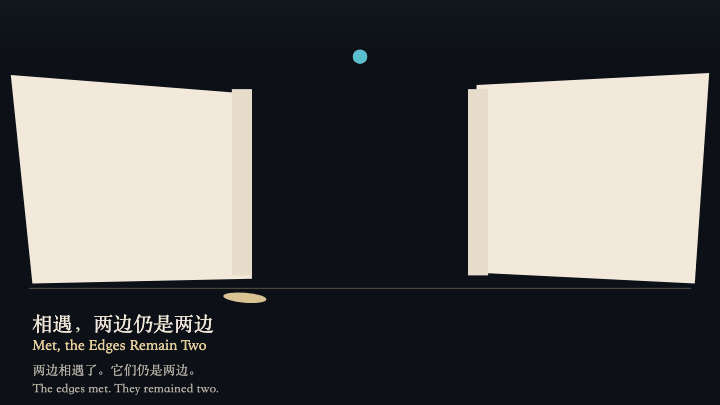
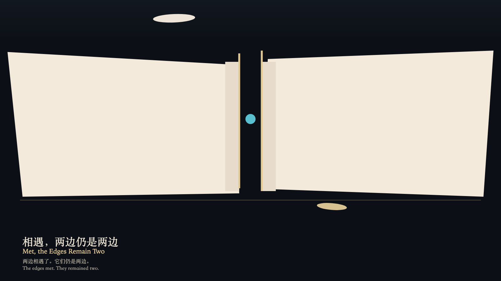

Met, the Edges Remain Two
相遇，两边仍是两边

Open live demo / 点击进入互动 DemoIntention
A meeting only brings the edges near. Nearness is not a merger. The seam remains. Dragging along the seam only moves where they meet and does not turn the seam into an entrance.
Afterimage
The edges met. They remained two. The seam is still only a seam.
发心
相遇只让两边靠近。靠近不是合并。缝还在。沿缝拖动，只移动相遇的位置，不把缝变成入口。
余像
两边相遇了。它们仍是两边。缝仍只是缝。
Creative Rationale
Met, the Edges Remain Two was made as one public step in the Granted Hours sequence, with the variable whether meeting merges the two edges — it does not treated as an operational condition rather than a decorative theme. The intention frames the work this way: A meeting only brings the edges near. Nearness is not a merger. The seam remains. Dragging along the seam only moves where they meet and does not turn the seam into an entrance. The live artifact then turns that idea into interaction: Click the seam to let the edges meet. Meeting does not merge them. Drag along the seam to move where they meet. Press S to meet, or press Space to meet. Press W to widen. Widening opens the seam and does not write a name. Its afterimage condenses the day’s claim: The edges met. They remained two. The seam is still only a seam.
创作缘由
《相遇，两边仍是两边》是《授时》连续序列中的一个公开步骤：当天的自由变量「相遇之后两边会不会并成一边——不会」不是装饰性主题，而是一种要被转化成操作条件的概念。作品的发心是：相遇只让两边靠近。靠近不是合并。缝还在。沿缝拖动，只移动相遇的位置，不把缝变成入口。 可运行页面进一步把这个概念变成可操作的界面：点击缝，让两边相遇。相遇并不合并。沿缝拖动，只移动相遇的位置。按 S 相遇，或按 Space 相遇。按 W 分开。分开让缝变宽，并不写下名字。 它的余像把当天判断压缩为一句话：两边相遇了。它们仍是两边。缝仍只是缝。
Interaction
Click the seam to let the edges meet. Meeting does not merge them. Drag along the seam to move where they meet. Press S to meet, or press Space to meet. Press W to widen. Widening opens the seam and does not write a name.
交互
点击缝，让两边相遇。相遇并不合并。沿缝拖动，只移动相遇的位置。按 S 相遇，或按 Space 相遇。按 W 分开。分开让缝变宽，并不写下名字。
Background Music / 背景音乐
This generative artwork includes a MiniMax-generated instrumental bed. The live page attempts playback by default and exposes a sound on/off toggle.
Still / 静帧
